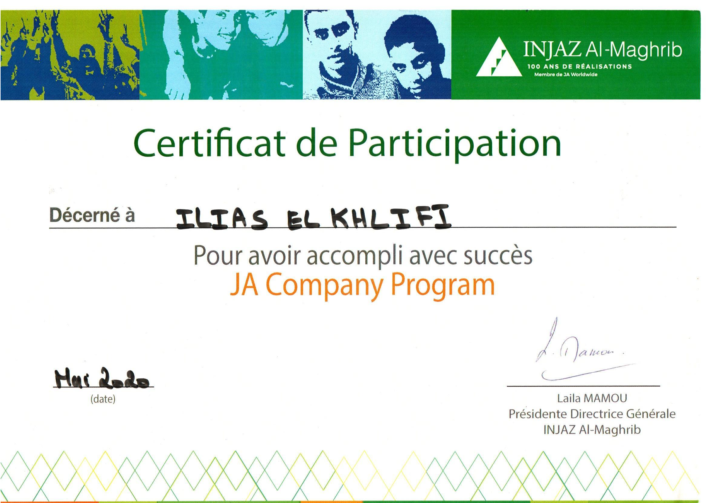
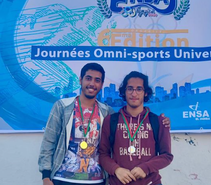
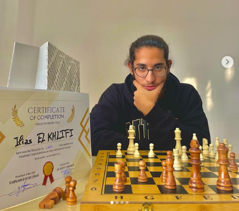
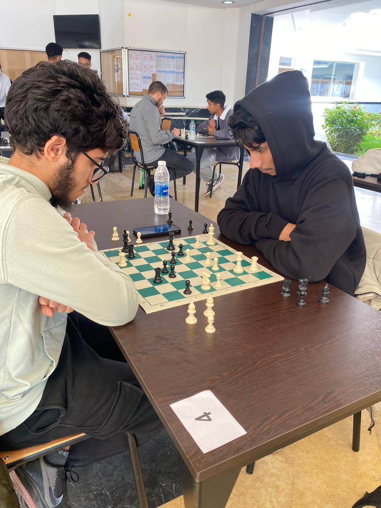

Formations
- Mai 2021 : Baccalauréat en Sciences Mathématiques -B- "Option francais ".
- Septembre 2021 - Juin 2023 : Cycle préparatoire à l'ENSA Beni Mellal .
- Septembre 2023 - Juin 2023 : Cycle ingénieur à l'ENSA Kénitra.
Compétences
Html5 / CSS3 :
J'ai eu l'occasion d'apprendre les bases du HTML5 et CSS3 mais aussi de réaliser des mini-projets pour mettre en pratique mes connaisances.


JavaScript:
Après avoir appris les bases du web , la suite a été d'apprendre JS pour créer des applications web dynamiques.

PHP:
J'ai acquis des compétences en développement d'applications web liées à des bases de données en utilisant PHP conjointement avec MySQL.

SQL:
La formation que j'ai acquise me permet de manipuler des bases de données relationnels : création , modifications avec des requêtes .

XML:
La formation que j'ai acquise me permet de créer , valider et transformer des documents XML.

C :
Grâce à une formation solide en programmation, j'ai acquis une compréhension approfondie en algorithmique et en structures de données .
POO en C++ :
Avec une expérience croissante en développement en C++, j'ai acquis une solide compréhension des principes fondamentaux de la programmation orientée objet (POO).
Para-scolaire
Étant conscient de l'importance d'être actif et engagé dans la vie étudiante pour développer mes compétences relationnelles et acquérir de nouvelles expériences enrichissantes, je m'engage à participer régulièrement aux activités des clubs .
JA Company Program avec Injaz Al-Arab (MAI 2020):
C'est ma toute première expérience avec le parascolaire, mais aussi une introduction au monde de l'entrepreneuriat. Avec mon équipe, nous avons réussi à nous classer 2ème dans la compétition internationale et 1er dans la compétition nationale.

Olympiades sportif ENSA - J (MAI 2021):
2ème place dans la discipline échecs

Individual games ENSA - BM (Decembre 2022):
1ère place dans la discipline échecs

Chess tournament ENSA - K (Novembre 2023):
1ère place

Loisirs

Je suis un passioné du jeu d'echecs . C'est un jeu que je trouve très captivant puisqu'il est à la fois simple à comprendre mais plus on le comprend plus on découvre sa compléxité. Ce jeu m'a appris à bien rélechir pour prendre la bonne décision au bon moment.